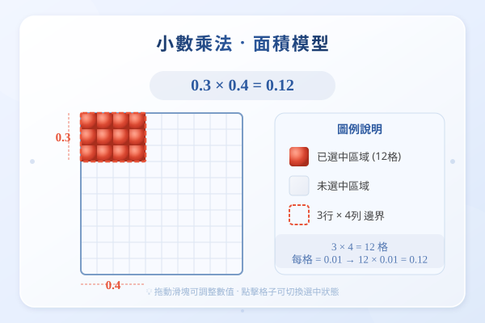

| # | 題目 | 答案 | 類型 |
|---|---|---|---|
| 1 | 計算 24 × 3 = ？再計算 2.4 × 3 = ？（提示：先當 24×3=72，再處理小數點） | 72 | auto |
| 2 | 計算 1.25 × 4 = ？（提示：先當 125×4=500，1.25有2個小數位→答案有2個 → 5.00 = 5） | 100 | auto |
| 3 | 數小數位：0.3 有幾個小數位？0.25 呢？0.125 呢？（關鍵：乘法的位數加總法） | ___ | manual |
| 4 | 把 0.3 × 0.4 轉為 3 × 4 = 12。兩個因數共有多少個小數位？答案應該是多少？ | 0 | auto |
| 5 | 計算 3.2 × 10 = ？3.2 × 100 = ？3.2 ÷ 10 = ？（觀察小數點移動方向與位數） | 0...2 | auto |
| 例1 | 計算 2.4 × 3 = ？（24×3=72，小數位：1 → 答案 = 7.2） | 12 | auto |
| 例2 | 計算 1.25 × 4 = ？（125×4=500，小數位：2 → 答案 = 5.00 = 5） | 100 | auto |
| 例3 | 計算 0.3 × 0.4 = ？（位數加總：1+1=2，3×4=12 → 0.12） | 0 | auto |
| 例4 | 計算 0.25 × 0.3 = ？（位數加總：2+1=3，25×3=75 → 0.075） | 0 | auto |
| 9 | 1.2 × 3 = ？ | 6 | auto |
| 10 | 0.5 × 4 = ？ | 20 | auto |
| 11 | 2.3 × 2 = ？ | 6 | auto |
| 12 | 0.2 × 0.3 = ？ | 0 | auto |
| 13 | 0.4 × 0.5 = ？ | 0 | auto |
| 14 | 2.5 × 0.4 = ？ | 0 | auto |
| 15 | 1.25 × 0.8 = ？ | 0 | auto |
| 16 | 0.15 × 0.3 = ？（注意：位數加總 = 2+1 = 3，需要補零嗎？） | 0 | auto |
| 17 | 4.2 × 10 = ？4.2 × 100 = ？4.2 × 1000 = ？ | 20 | auto |
| 18 | 56 × 0.1 = ？56 × 0.01 = ？5.6 × 0.01 = ？ | 0 | auto |
| 19 | 0.25 × 0.16 = ？ | 0 | auto |
| 20 | 0.12 × 0.03 = ？（位數加總 = 2+2 = 4，12×3=36，需要補幾個零？） | 0 | auto |
| 21 | 3.6 × 2.5 = ？ | 12 | auto |
| 22 | 比較 0.3 × 0.5 和 0.03 × 5，哪個較大？為甚麼？（小心：位數加總不同導致小數點位置不同！） | 0 | auto |
| 23 | 已知 24 × 35 = 840，不用重新計算，直接寫出 0.24 × 0.35 = ？ | 840 | auto |
| 24 | 一包糖重 1.2 公斤，買 0.5 包，共重多少公斤？ | ___ | manual |
| 25 | 每米布料售 $15.8，買 2.5 米要付多少元？ | 7...1 | manual |
| 26 | 一個長方形長 2.4 米，闊 1.5 米，面積是多少平方米？ | 3.6 cm² | auto |
| 27 | 每公升汽油可行 13.6 公里，0.75 公升可行多少公里？ | ___ | manual |
| 28 | 一枝筆 $3.5，買 8 枝要付多少元？（小數×整數） | ___ | manual |
| 29 | 哥哥跑了 4.5 圈，每圈長 0.4 公里，共跑多少公里？ | ___ | manual |
| 🏔️1 | 已知 125 × 8 = 1000，不用重新計算，直接寫出以下結果：(a) 1.25 × 0.08 = ？(b) 0.125 × 80 = ？(c) 12.5 | 1000 | auto |
| 🏔️2 | 水箱容量 2.4 升，每分鐘注水 0.35 升。注了 0.5 分鐘後，水箱有多少升水？（先求注水量，小數×小數的位數加總！） | ___ | manual |
| 🏔️3 | 長方形 A：長 2.4cm，闊是長的 0.5 倍。長方形 B：長是 A 的 1.5 倍，闊是 A 的 0.8 倍。B 的面積是多少？（三步推理：先求A闊→求B長 | 1.2 cm² | auto |
| H1 | 0.6 × 7 = ？ | 42 | auto |
| H2 | 3.4 × 2 = ？ | 8 | auto |
| H3 | 0.5 × 0.4 = ？ | 0 | auto |
| H4 | 0.7 × 0.3 = ？ | 0 | auto |
| H5 | 2.5 × 0.6 = ？ | 0 | auto |
| H6 | 一支鉛筆長 18.5 厘米，6 支鉛筆頭尾相接共長多少厘米？（小數×整數） | ___ | manual |
| H7 | 用位數加總法計算：(a) 0.25 × 4 = ？(b) 2.5 × 0.4 = ？(c) 25 × 0.04 = ？觀察三個答案，你發現了甚麼規律？ | 100 | auto |
| H8 | 一個長方形長 3.5 米，闊 1.2 米，面積是多少平方米？ | 4.2 cm² | auto |
霖楓學苑 · LF Academy · 自動答案生成器 v1.0 · 手動題目請老師覆核